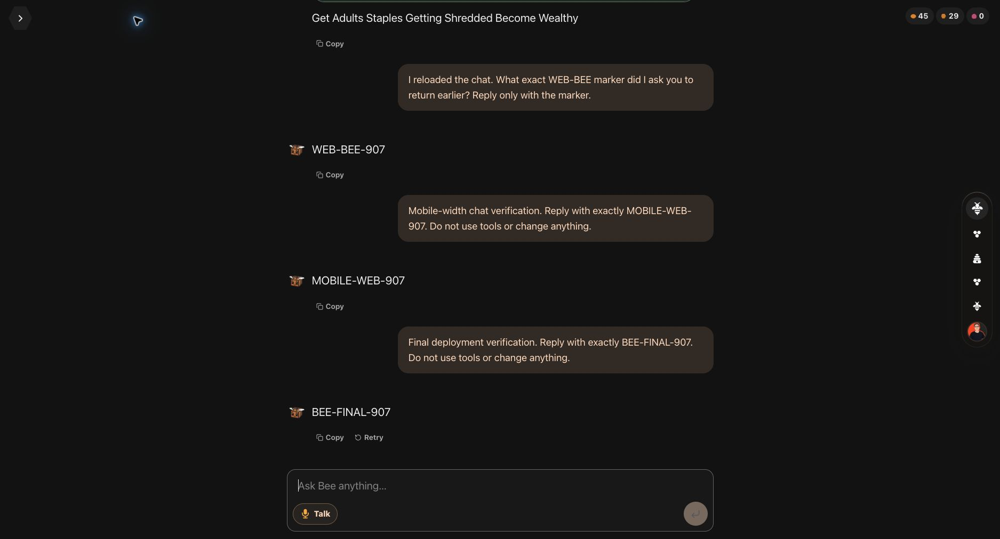
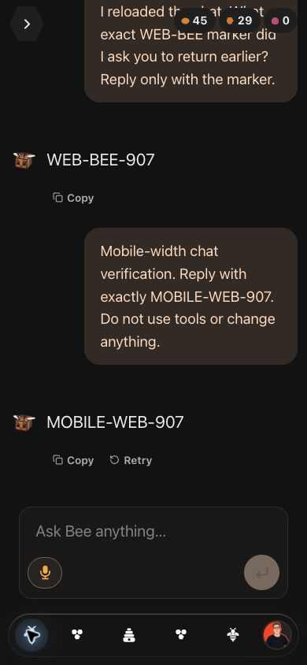

Bee chat works again on the web.
The browser could load saved messages but could not reach the agent. Its preflight request returned HTTP 403. The deployed Worker now allows Bee's web domain and still rejects unknown origins.
Verified September 7, 2026, through the signed-in production website and its connected backend. Message delivery, a goals tool call, conversation recall, reload, retry, and mobile web navigation passed.

What changed
- Allowed the deployed web origin in the Worker's CORS configuration.
- Filtered internal system, hidden, and diagnostic messages from shared web and mobile history.
- Moved the mobile web composer clear of the bottom navigation and restored the Bee link back to chat.
- Fixed iMessage outbox polls that were incorrectly required to include a user header. The bridge secret remains required.
- Updated deployment instructions for the live Vercel project and browser verification.

Evidence
Google sign-in opened the existing account. A goals specialist returned the current goal names and displayed its completed tool details. Reload preserved messages and the tool result. Bee recalled a marker from an earlier turn.
Retry replaced the visible message pair without duplication. An independent Convex query confirmed the old pair was hidden and the replacement was stored. A second reload preserved that result.
| Check | Result |
|---|---|
| Agent tests | 61 passed |
| Backend tests | 316 passed |
| Web tests | 44 passed |
| Shared chat tests | 8 passed |
| Mobile chat tests | 8 passed |
| Bridge tests | 23 passed |
| Types across all six packages | Passed |
| Allowed / unknown browser origins | 204 / 403 |
| Bridge outbox secret validation | Passed |
| Native iOS | Build and launch passed; sign-in pending |
Deployment and limits
Code is on main at 56602ad. Convex, the agent Worker, the Vercel web app, and the Railway bridge are deployed. The existing Worker container was preserved.
Worker d9a38c89-667f-4201-9a8f-7437f0bb3d24
Vercel dpl_AfEMEpA278cRqyatUNfeQTiN27yu
Railway 15e7955a-9b8a-4639-8313-15e9fe006a75
The native iOS release build passed and launched on an iPhone 17 Pro simulator. Google SSO opened its sign-in page. This simulator has no saved Google session, so native chat verification is waiting for user sign-in. The native app has not been published to users.
{kind=link}
These 460 focused tests and live checks do not prove every bot feature. The account's existing provider configuration was used. OpenRouter and ChatGPT were not independently forced and tested. Voice capture, every connector, physical iOS and Android behavior, and on-chain actions remain unverified. No third-party messages or wallet transactions were sent.
The history change is shared by web and native mobile. CLI and iMessage already select completed assistant replies through their own presentation paths. No wire contract or model routing changed.